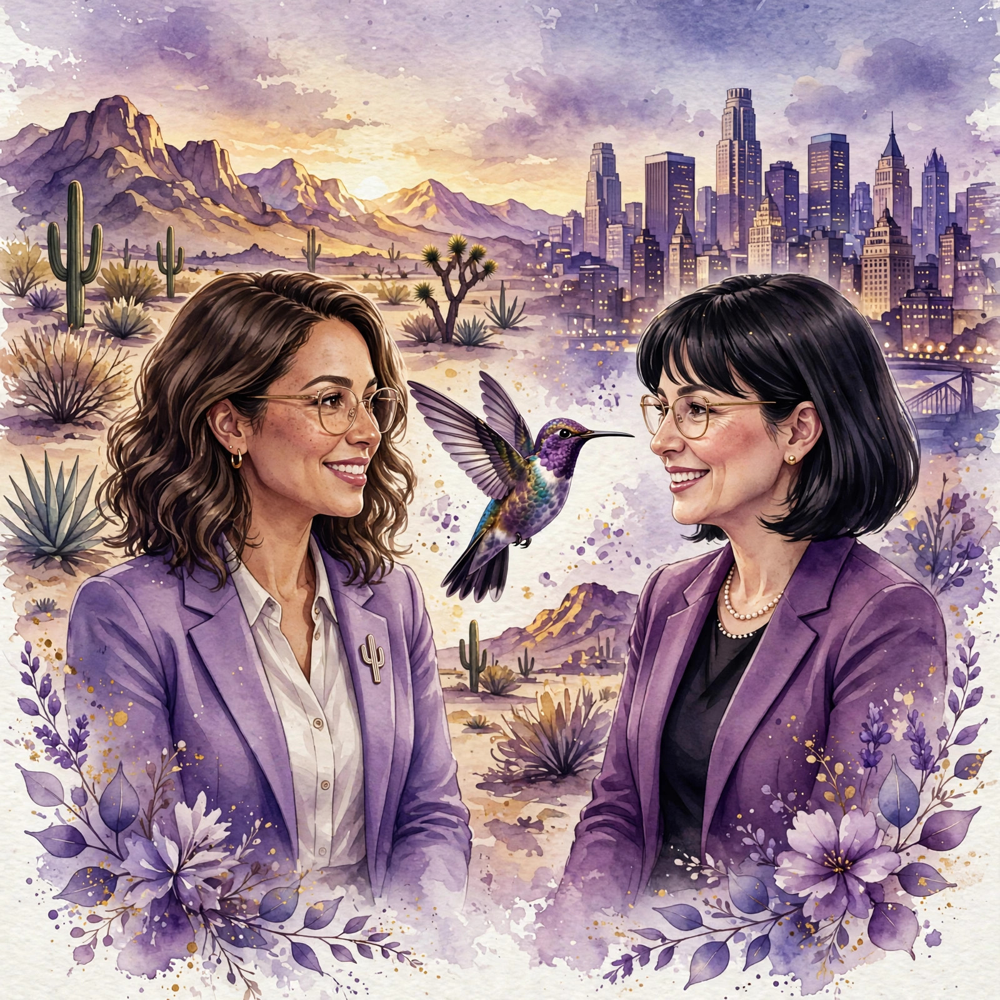

Two GME leaders, from the West Coast to the East Coast, in conversation about and eventually with the leaders shaping the GME community.
How a declined manuscript became FULGME, the open-access journal giving GME professionals a place to publish.
Subscribe with any podcast app: RSS feed